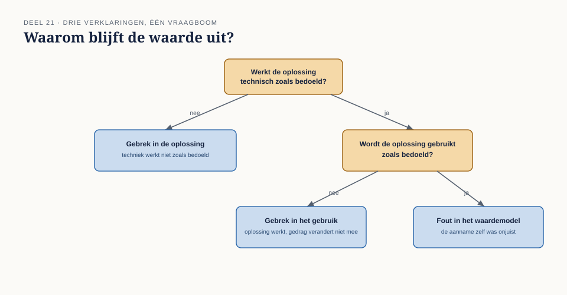
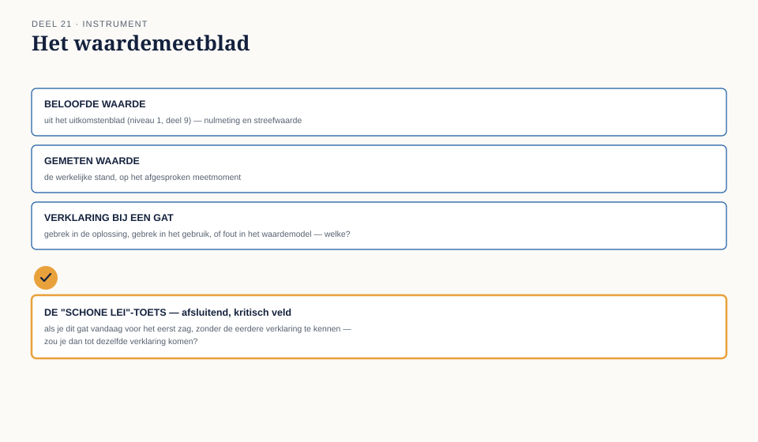

Cursus Businessanalyse · Niveau 2 (CCBA) · Deel 21 van 30
Oplossingsevaluatie: wat er terechtkwam.
Het uitkomstenblad uit niveau 1, deel 9 legde vooraf vast waaraan u succes en falen zou herkennen. Dit deel gaat over het moment dat die belofte wordt ingelost: een opgeleverde oplossing, enkele maanden in gebruik, daadwerkelijk evalueren tegen wat er beloofd was — en, als er een gat blijkt te zijn, uitzoeken of dat aan de oplossing zelf ligt, aan hoe zij gebruikt wordt, of aan de aanname die aan de belofte zelf ten grondslag lag.
7secties
±1 dagdeelleestijd + werkboek
4controlevragen
3soorten verklaringen
Positionering. Deze cursus is een voorbereiding op het CCBA-examen van IIBA en uitdrukkelijk geen vervanging van het officiële examenmateriaal — A Guide to the Business Analysis Body of Knowledge (BABOK Guide) en The Business Analysis Standard, beide gratis te raadplegen via iiba.org. Alle formuleringen, figuren en werkvormen in dit materiaal zijn van Ductus; studeer voor het examen altijd óók de bron.
Niveau 2: 11 De analyseaanpak kiezen → 12 Governance & informatiebeheer → 13 Strategieanalyse in de praktijk → 14 Elicitatie I → 15 Elicitatie II → 16 Traceren en onderhouden → 17 Prioriteren en goedkeuren → 18 Specificeren en modelleren → 19 Verifiëren en valideren → 20 Agile business-analyse → 21 Oplossingsevaluatie (hier) → 22 Examentraining CCBA
01
Waar dit deel over gaat
⏱ 8 min
Het uitkomstenblad uit niveau 1, deel 9 legde vooraf vast waaraan u succes en falen zou herkennen. Dit deel gaat over het moment dat die belofte wordt ingelost: een opgeleverde oplossing, enkele maanden in gebruik, daadwerkelijk evalueren tegen wat er beloofd was — en, als er een gat blijkt te zijn, uitzoeken of dat aan de oplossing zelf ligt, aan hoe zij gebruikt wordt, of aan de aanname die aan de belofte zelf ten grondslag lag.
Aan het eind van dit deel kunt u:
gerealiseerde waarde meten tegen de oorspronkelijke belofte uit het uitkomstenblad;
drie soorten verklaringen voor een waardegat onderscheiden: een gebrek in de oplossing zelf, een gebrek in het gebruik ervan, of een fout in de oorspronkelijke aanname over hoe output tot waarde zou leiden;
een eerlijke, actuele aanbeveling doen, ook als die ingaat tegen een eerder genomen besluit;
met het waardemeetblad deze evaluatie systematisch uitvoeren.
02
De casus: de drempel van twintig procent
⏱ 10 min
Uit het casusdossier: R-034 (deel 18) activeert automatisch een herberekening van de premie bij een deeltijdwijziging van meer dan 20%.
Drie maanden na livegang vraagt Merel Nour el Idrissi om de cijfers. Het aantal handmatige herberekeningen bij Uitvoering is gedaald, maar minder dan de streefwaarde uit het destijds opgestelde uitkomstenblad voorspelde.
"Hoeveel minder dan verwacht?"
"Ongeveer de helft van de beoogde daling."
Merel spreekt Karin Dessens, die al sinds deel 15 twijfels had over automatisering zonder toezicht.
"Ik controleer de automatische herberekeningen eigenlijk nog steeds handmatig," zegt Karin. "Niet omdat het moet, maar ik vertrouw het nog niet helemaal. Na wat er twee jaar geleden misging, wil ik het zeker weten."
Hier ligt een compleet ander verhaal dan bij WGP 2.0 in niveau 1: de oplossing werkt technisch zoals bedoeld, en toch blijft de beoogde waarde deels uit — niet door een gebrek in de bouw, maar doordat een van de gebruikers, om een begrijpelijke reden, het oude gedrag naast het nieuwe is blijven volhouden.
03
Drie soorten verklaringen voor een waardegat
⏱ 15 min
Wanneer gerealiseerde waarde achterblijft bij de belofte uit het uitkomstenblad, is de verleiding groot om meteen naar een oplossing te grijpen. Eerst is echter vaststellen nodig wélk van drie soorten verklaringen van toepassing is — want de vervolgstap verschilt sterk per soort.
Een gebrek in de oplossing zelf. De output doet niet wat hij zou moeten doen: een fout in de beslistabel, een verkeerd ingestelde drempel, een technisch defect. De oplossing hier: het gebrek herstellen, terug naar de betrokken discipline (bouwer, architect).
Een gebrek in het gebruik. De oplossing werkt zoals bedoeld, maar wordt niet, niet volledig, of naast het oude gedrag gebruikt — zoals Karin, die de automatische herberekening blijft controleren. De oplossing hier ligt niet in de techniek, maar in vertrouwen, training, of het wegnemen van de reden waarom het oude gedrag aantrekkelijk blijft.
Een fout in het waardemodel. De aanname die ten grondslag lag aan de belofte — dat minder handmatige herberekeningen automatisch tot de voorziene tijdsbesparing zou leiden — blijkt zelf onjuist of onvolledig geweest, los van hoe goed de oplossing werkt of gebruikt wordt. Misschien was de handmatige herberekening zelf nooit de grootste tijdsvreter, en zit de werkelijke tijdwinst ergens anders.
Waarom dit onderscheid ertoe doet
Deze drie verklaringen vragen fundamenteel verschillende vervolgstappen, en ze worden in de praktijk vaak door elkaar gehaald — meestal wordt te snel naar de eerste verklaring gegrepen ("er zit een bug in"), terwijl de tweede (Karins gedrag) of de derde (een verkeerde aanname) net zo goed, of zelfs waarschijnlijker, aan de orde kunnen zijn. In de casus is de eerste verklaring vrijwel zeker niet van toepassing — de techniek werkt zoals bedoeld — en ligt de verklaring in de tweede categorie, met mogelijk een kleine bijdrage van de derde (was de geschatte tijdsbesparing per herberekening wel realistisch?).

Figuur 21-1 — drie soorten verklaringen voor een waardegat, met een beslisboom om ze te onderscheiden
Controlevragen
Uit Werkboek deel 21, Opdracht 1 en 2 — het gat berekenen en een verkeerde eerste ingeving getoetst
1Dossierstuk 21-A: vóór R-034 gemiddeld 40 handmatige herberekeningen per maand, na livegang gemiddeld 30 per maand, terwijl het uitkomstenblad van destijds uitging van minstens 50% daling. Bereken het exacte gat, en bepaal met dossierstuk 21-B erbij welke van de drie verklaringen het meest waarschijnlijk is, en welke minder.Toon antwoord
Streefwaarde: minstens 50% daling (van 40 naar 20 of lager). Realisatie: 25% daling (van 40 naar 30). Het gat: 25 procentpunt. Meest waarschijnlijke verklaring: een gebrek in gebruik (Karin en waarschijnlijk anderen controleren nog handmatig, wat het aantal "handmatige herberekeningen" kunstmatig hoog houdt zonder dat dit iets zegt over de kwaliteit van de automatisering). Minder waarschijnlijk: een gebrek in de oplossing zelf (geen enkele aanwijzing in de dossierstukken dat de techniek niet werkt zoals bedoeld) of een fout in het waardemodel (denkbaar, maar er is nog onvoldoende bewijs om dit als hoofdverklaring aan te wijzen vóórdat het gebruiksvraagstuk is uitgesloten).
2Sander stelt, bij het zien van het gat, meteen voor om de drempel van 20% te verlagen naar 15%, in de veronderstelling dat er dan meer automatische herberekeningen plaatsvinden en het gat kleiner wordt. Waarom is dit waarschijnlijk niet de juiste vervolgstap?Toon antwoord
Het verlagen van de drempel zou het gebrek in gebruik niet oplossen — Karin zou een groter aandeel van de mutaties automatisch zien verwerken, maar zij zou die naar alle waarschijnlijkheid net zo goed handmatig blijven controleren, om dezelfde reden als nu. Dit zou zelfs een nieuw risico toevoegen: meer mutaties onder een lagere drempel, zonder dat het onderliggende vertrouwensprobleem is aangepakt, mogelijk gecombineerd met nieuwe randgevallen die nog niet zijn getoetst. Dit is een voorbeeld van de denkfout die dit deel wil voorkomen: een technische aanpassing voorstellen voor een niet-technisch probleem.
04
Terug naar het verliezersprotocol
⏱ 10 min
De casus in dit deel is meer dan een technisch evaluatievraagstuk — het is ook de plek waar de belofte uit deel 15 wordt getoetst. Merel beloofde Karin destijds, via het verliezersprotocol, dat haar zorg over datakwaliteit zou terugkomen in een later document, ook al werd niet voor haar voorkeur gekozen. Karins voortdurende handmatige controle is het bewijs dat die belofte destijds niet voldoende is ingelost: haar zorg is misschien wel genoemd, maar niet weggenomen.
Dit is een belangrijke les voor oplossingsevaluatie in het algemeen: een gebrek in gebruik is zelden alleen een trainingsvraagstuk. Vaak is het een signaal dat een eerder geuite zorg nooit echt is opgelost, ook al is er destijds "rekening mee gehouden" op papier.
Controlevraag
Uit Werkboek deel 21, Opdracht 4 — het verliezersprotocol getoetst
1Was het verliezersprotocol uit deel 15 destijds goed uitgevoerd, gegeven wat u nu weet? Hoe zou een beter verliezersprotocol er destijds hebben uitgezien, met de kennis van nu?Toon antwoord
Een sterk antwoord erkent dat het verliezersprotocol uit deel 15 destijds waarschijnlijk te veel bleef steken bij erkenning ("we nemen je zorg mee") zonder een concreet, verifieerbaar vervolg dat Karins vertrouwen daadwerkelijk zou opbouwen. Een beter verliezersprotocol had toen al een concreet mechanisme kunnen bevatten — bijvoorbeeld: een vooraf afgesproken periode van gezamenlijke steekproefcontrole, met een duidelijk eindmoment waarop het vertrouwen opnieuw wordt beoordeeld — in plaats van de open, ongedateerde belofte die er destijds lag. Dit is een waardevolle terugkoppeling naar deel 15: een verliezersprotocol dat alleen erkenning biedt zonder een concreet mechanisme, lost het onderliggende probleem vaak niet op, het stelt het alleen uit.
05
Een eerlijke aanbeveling, ook tegen een eerder besluit in
⏱ 10 min
Oplossingsevaluatie vraagt om dezelfde discipline als het optieblad uit niveau 1, deel 8: een eerlijk oordeel, ook als dat oordeel ingaat tegen een besluit dat u zelf eerder mede heeft genomen. Het is verleidelijk om een tegenvallend resultaat te verdedigen ("het werkt bijna zoals bedoeld") in plaats van te erkennen dat de belofte niet is waargemaakt.
Een eerlijke aanbeveling na evaluatie doet drie dingen: benoemt het gat zonder het te verkleinen, wijst de meest waarschijnlijke van de drie verklaringen aan met bewijs, en doet een concrete vervolgstap — die net zo goed kan zijn "de oplossing verder versterken" als "het achterliggende waardemodel herzien" of, in het uiterste geval, "deze route verlaten en een andere optie uit het oorspronkelijke optieblad alsnog overwegen".
06
De werkvorm: het waardemeetblad
⏱ 20 min
Het instrument van dit deel is het waardemeetblad: een sjabloon dat de oorspronkelijke belofte uit het uitkomstenblad naast de daadwerkelijke realisatie legt, het gat verklaart, en een eerlijke aanbeveling oplevert.
Het blad
Vijf velden
De oorspronkelijke belofte — maatstaf, nulmeting, streefwaarde, afbreekcriterium, overgenomen uit het uitkomstenblad. Gerealiseerde waarde — de huidige meting, met bron. Het gat — het verschil tussen streefwaarde en realisatie. Verklaring — welke van de drie soorten (oplossing, gebruik, waardemodel) is van toepassing, met bewijs. Aanbeveling — concrete vervolgstap.
Het veld dat het verschil maakt
De schone lei-toets
Als dit een compleet nieuwe aanbeveling was, zonder de geschiedenis van het eerdere besluit — zou u hem nu nog steeds doen?
Dit veld is een bewuste correctie op de neiging om een eerder genomen besluit te verdedigen omdat het nu eenmaal genomen is. Door de vraag te stellen alsof u met een schone lei begint, wordt zichtbaar of de huidige aanbeveling standhoudt op eigen kracht, of dat zij alleen overeind blijft omdat terugkomen op het eerdere besluit ongemakkelijk voelt.

Figuur 21-2 — het waardemeetblad, met de "schone lei"-toets als afsluitend, kritisch veld
Toegepast op de casus
Veld
Inhoud
Oorspronkelijke belofte
Daling handmatige herberekeningen met minstens 50% binnen 12 weken (uitkomstenblad-achtige belofte bij R-034)
Gerealiseerde waarde
Daling van ongeveer 25%
Het gat
25 procentpunt onder de streefwaarde
Verklaring
Gebrek in gebruik: Karin (en mogelijk andere collega's) controleren automatische herberekeningen nog steeds handmatig, uit onvoldoende vertrouwen na een eerdere mislukte pilot
Aanbeveling
Geen technische aanpassing nodig. In plaats daarvan: een gerichte, tijdelijke steekproefcontrole door Uitvoering zelf ontworpen en gedragen (in plaats van volledige handmatige herhaling), met een vooraf afgesproken moment waarop het vertrouwen wordt geëvalueerd
Schone lei-toets
Ja, deze aanbeveling houdt stand — zij lost het werkelijke probleem (vertrouwen, niet techniek) op, in plaats van de oorspronkelijke automatisering overbodig te verklaren
Controlevraag
Uit Werkboek deel 21, Opdracht 3 — het waardemeetblad invullen
1Vul een compleet waardemeetblad in voor R-034, gebruikmakend van dossierstuk 21-A en 21-B. Vul het afsluitende veld ("schone lei"-toets) expliciet in met een onderbouwing.Toon antwoord
Zie het voorbeeld hierboven ("Toegepast op de casus") als richtlijn. Toets bij het invullen vooral of de verklaring in categorie "gebruik" wordt gekozen (niet "oplossing"), en of de schone lei-toets een concreet, beargumenteerd antwoord bevat in plaats van automatisch "ja, want het is al besloten".
07
Terug naar de casus
⏱ 8 min
Karins volgehouden handmatige controle is geen falen van haar kant, en ook niet primair een technisch probleem. Het is het late, zichtbare bewijs dat een zorg die in deel 15 terecht werd benoemd, nooit volledig is weggenomen — alleen erkend. Het waardemeetblad maakt dat verschil zichtbaar en biedt een aanbeveling die niet de techniek herhaalt, maar het onderliggende vertrouwen adresseert.
Vooruit naar deel 22. Met alle zes kennisgebieden van CCBA nu praktisch doorlopen — BAPM, E&C, RLCM, RADD, SA op praktijkniveau, en nu SE — sluit niveau 2 af met examentraining, een portfolio-oefening, en het BA-urenlogboek.
Verder naar deel 22
Met alle zes kennisgebieden van CCBA nu praktisch doorlopen — BAPM, E&C, RLCM, RADD, SA op praktijkniveau, en nu SE — sluit niveau 2 af met examentraining, een portfolio-oefening en het BA-urenlogboek.